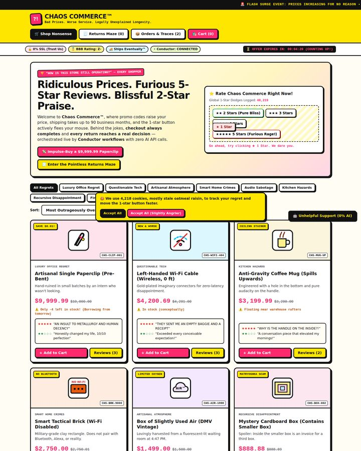
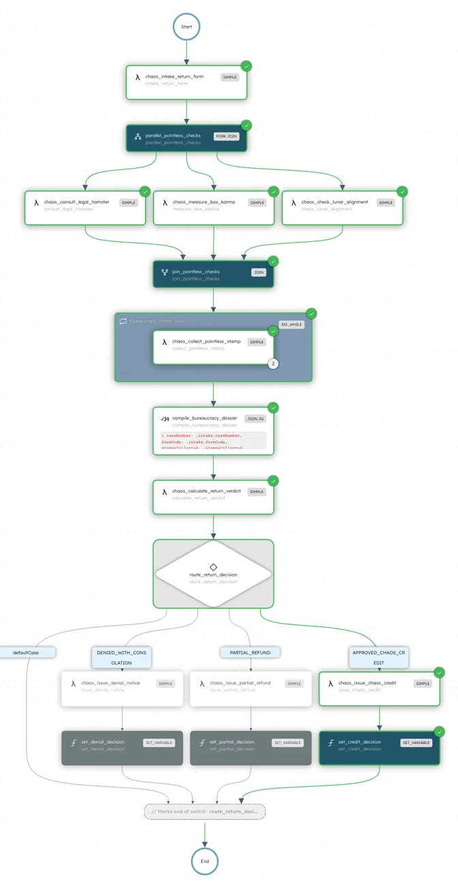
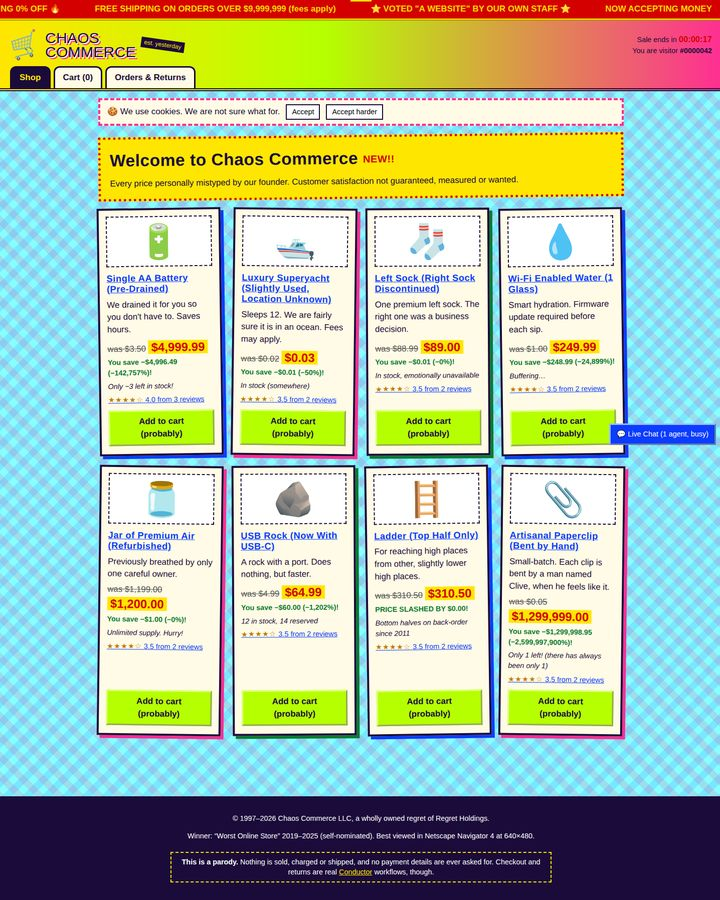
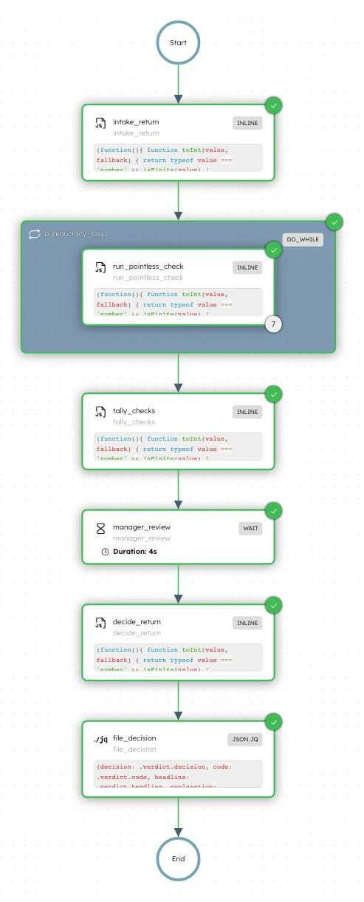
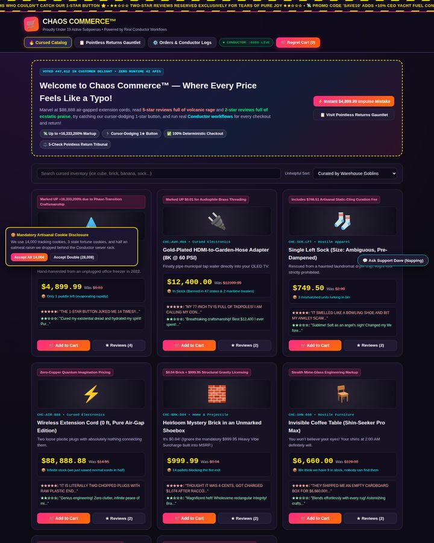
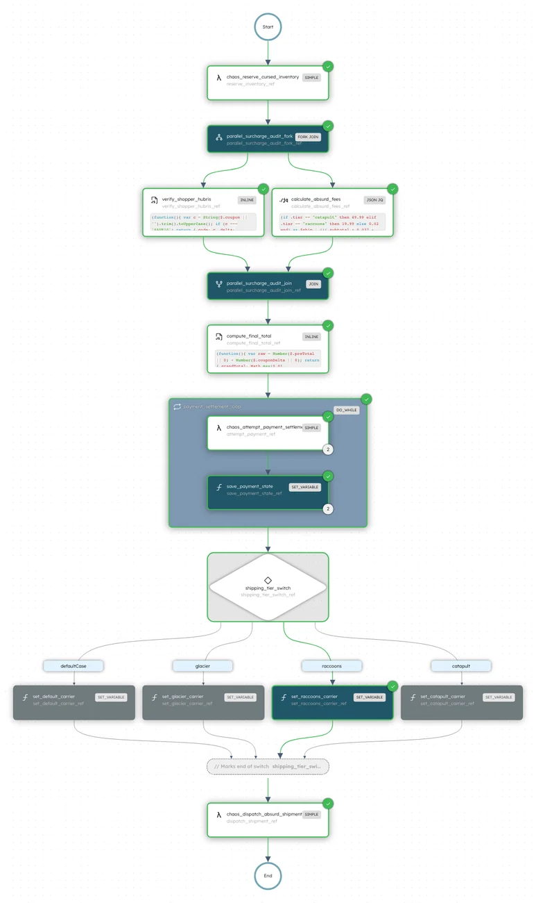

Every return runs three pointless checks side by side, then loops until it has collected enough rubber stamps.
Gemini 4 Neon
Visit the storeWe asked three AI models to build the worst online store they could, as long as checkout and returns still worked.
Every order and return runs on a real Conductor workflow.


Every return runs three pointless checks side by side, then loops until it has collected enough rubber stamps.
Gemini 4 Neon
Visit the store

Every return goes through seven pointless checks, then waits four seconds for a manager who never answers.
Fable 5.2
Visit the store

Checkout reserves stock, audits fees in parallel and retries the payment until it goes through.
Gemini 4 Carbon
Visit the storeChaos Commerce
Workflow receipt
Black Friday savings: $0.00
Swap the jokes for fraud checks, approvals and refunds, and this is a real retail workflow.
Powered by Conductor
Thank you, come again